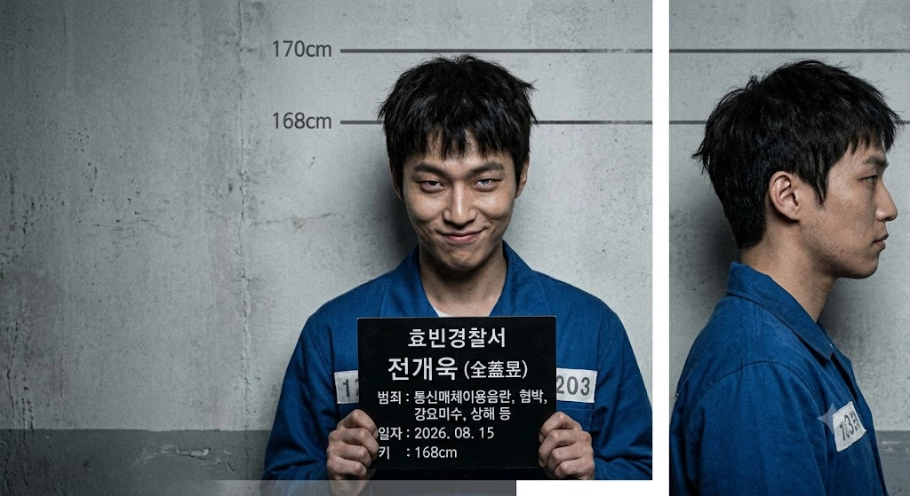

| 전개욱 (全蓋昱) Jeon Gea-uk | |
|---|---|
 | |
| 출생 | 2002년 5월 16일 (만 24세) 덕빈북도 저천군 저천읍 저천리 |
| 거주지 | |
| 현재지 | 효빈광역시 안천구 융문동 203 (효빈교도소[1]) |
| 국적 | 대한민국 |
| 신체 | 168cm[2], 60~65kg 추정[3] |
| 가족 |
부모, 남동생 (※ 아버지 전직 경찰관, 덮어주기 수사 발각으로 파면. 이 사건으로 어머니는 이혼. 현재 가문 파산 및 전원 영구 의절 상태) |
| 학력 |
저천초등학교 (졸업) 우구중학교 (졸업) 우구고등학교 (졸업) 효빈대학교 (수산자원학 / 심리학 부전공 / 영구 퇴학(출교))[4] |
| 병역 | 사회복무요원 소집 대상자 (정신질환)[5] → 병역면제(제적)[6] |
| 종교 | 기독교 (부활제일교회(...) 신자) |
| 별명(멸칭) | 자폭맨, ㅈ창놈, 개창렬(...), ㅈㅊ년, 변태원숭이, 꼬맹이, ㅈ만한새끼, 아빠 찬스 호소인, 능지처참, 벌레 |
| 범죄 및 형량 |
징역 19년 + 위치추적 전자장치 10년 부착 (15년: 통신매체이용음란, 협박, 강요미수, 상해(과실치상), 강제추행 미수, 접근금지 명령 위반, 법정모독, 모욕, 명예훼손 및 무고, 특수공용물건 손상 미수, 아동복지법 위반 + 4년: 법정모독 및 공직자 명예훼손 별건 기소) |
| 출소일 | 2043년 1월 4일 ()[7] |
조창렬, 이송윤과 함께 효빈대학교 100년 역사상 최악의 흑역사를 장식한 앰생 트리오의 일원이자, 경찰 아빠 빽만 믿고 깝치다 가문 전체를 멸문지화로 몰아넣은 전설의 자폭맨.
조창렬의 늙다리 동기이자 효빈대 수산자원학과 입결 빵꾸 사태의 수혜자로 들어와 23학번 행세를 했으나, 실상은 조창렬 못지않은 극우 혐오 성향과 반사회적 인격장애를 가진 쓰레기다. 고노애 권력형 성범죄 사태 당시 조창렬, 이송윤과 함께 집단 성희롱과 2차 가해에 앞장섰다.
특히 식당 화장실 앞에서 경찰 간부인 아버지의 빽을 믿고 허세를 부리다, 공공학과 브레인 유채나가 폰 녹음기를 켜둔 것도 모른 채 아버지가 자신의 학폭을 덮어주었던 과거 은폐 비리를 수많은 인파 앞에서 실시간으로 자백해버리는 경이로운 능지처참을 보여주었다. 결국 이 자폭 한 방으로 아버지는 옷을 벗고 감옥에 가 가문이 풍비박산 났으며, 자신 역시 징역 19년을 선고받고 청춘을 통째로 압수당했다.
168cm로 대한민국 남성 평균에는 택도 없는 체격이지만, 유일하게 159cm인 조창렬보다는 크다는 이유 하나만으로 조창렬과 어울리며 얄팍한 우월감을 느끼던 인간 조무사다. 경찰 간부인 아버지를 둔 덕에 학창 시절 온갖 양아치 짓을 저지르고도 무마되어 법을 우습게 아는 썩어빠진 사고방식을 갖게 되었다.
그 역시 조창렬 일당과 마찬가지로 효빈시 외곽에 위치한 이단 시비가 끊이지 않는 '부활제일교회'의 신자다. 이 교회는 예배 시간에 특정 정당 지지를 강요하고 반대 세력을 '빨갱이 사탄'으로 규정하는 극단적인 정치적 광신도 집단으로, 전개욱은 어린 시절부터 이곳에서 세뇌당하며 여성과 사회적 약자에 대한 극도의 혐오를 키웠다.
가장 가관인 것은 그의 병역 판정이다. 그는 사회복무요원 소집 대상자(정신질환) 판정을 받았는데, 이는 정당하게 심각한 가정폭력 트라우마로 4급 판정을 받은 주성우를 향해 "비리로 뺀 공익충"이라고 지랄을 떨었던 본인이야말로, 진짜 대충 병원 기록을 조작해 결격 사유로 뺀 악질 케이스였기 때문이다.[5] 모든 정신질환자가 그런 것은 결코 아니지만, 전개욱은 인성 교육 부재와 병을 방치하면 인간이 얼마나 악랄해질 수 있는지 보여주는 최악의 사례로 꼽힌다.
2023학년도 효빈대학교 입시 당시, 주요 학과(사회대, 의대 등)는 건재했지만 일부 학과에서 거대한 빵꾸 사태가 발생했다. 전개욱은 이 틈을 타 내신 7.4등급이라는 처참한 성적으로 가장 빵꾸가 컸던 수산자원학과에 전설의 '추추추추추추추추추추합'으로 문 닫고 들어왔다.[8]
수산자원학과는 이자캠퍼스 소속이지만, 전개욱은 전공 수업은 대충 제끼며 이자캠퍼스에는 가지도 않았다. 대신 부전공은 제한 없이 들을 수 있는 효빈대학교의 특성을 악용해, "심리학과에 예쁜 여학생이 많고 만만하다"는 이유 하나만으로 본캠퍼스의 심리학과 과목만 기웃거리며 조창렬과 징그러운 행보를 함께 했다.
이 인간 폐기물이 경찰 아빠의 빽을 믿고 저지른 수많은 악행 중 가장 대표적이고 악랄한 사건들은 다음과 같다.
전개욱은 고노애 사태 초기, 조창렬의 늙다리 앰생 동기로 뒤에서 어울려 다녔을 뿐, 직접적으로 전면에 나서지는 않았다. 그러나 어느 날 저녁 식당 화장실 앞 복도 사건부터 등장하여 본인 스스로 지옥으로 다이빙하는 완벽한 자폭을 시전한다.
조창렬이 대낮 공원에서 경찰에 연행된 그날 저녁, 섭식장애 트라우마가 발작해 화장실에서 구역질을 쏟아낸 고노애와 그녀를 부둥켜안고 울던 강하애 앞에, 전개욱은 이송윤과 함께 난입했다. 그는 우는 두 사람을 보며 징그러운 웃음을 흘리며 조롱했다.
"에휴 병신년들, 아주 화장실 앞에서 꼴값을 떨고 있네. 야 송윤아, 나도 좀 끼워줘라 ㅋㅋㅋ 야 고노애, 만약 거절하면 내가 아까 그 교수님한테 가서 네가 여기서 험담하고 토한다고 싹 다 일러바쳐 줄게 ㅋㅋㅋㅋ 네 약점 에타에 싹 다 까발려 줄게 ㅋㅋㅋㅋ"
"그래, 나도 당연히 같이 해야지 ㅋㅋㅋ 난 변기통 붙잡고 토하는 토 냄새 나는 년은 취향 아니니까 필요 없고... 야 금발년(강하애). 너 이리로 와. 너 나랑 한판 하자 ㅋㅋㅋ"
소란을 듣고 달려온 오이슬과 주성우가 앞을 가로막고, 식당 주인이 당장 나가라고 호통을 치자 전개욱은 적반하장으로 쌍욕을 날렸다.
"씨발!! 밥 안 시키면 못 들어와?! 꼬우면 한 번 패보든가!! 패봐 씨발!! 니들 싹 다 특수폭행으로 고소하고, 국회의원 딸내미가 다구리 깠다고 언론에 싹 다 뿌려버릴 테니까 씨발련들아!!!!!"
식당 주인이 경찰을 부르겠다고 하자, 전개욱은 자신의 아빠가 경찰 간부라는 사실을 믿고 실실 쪼개며 거들먹거렸다.
"ㅋㅋㅋㅋ 불러 씨발!! 야, 좆나 웃기네! 우리 아빠가 경찰 간부야 병신들아 ㅋㅋㅋ 경찰 와봤자 어차피 나 바로 풀려나 씨발련들아 ㅋㅋㅋㅋ 해보라고 씨발 ㅋㅋㅋㅋ"
잠시 후, 본서 경찰들과 함께 진짜로 경찰 간부인 전개욱의 아빠가 들이닥쳤다. 전개욱은 기세등등하게 삿대질을 하며 김시연 일행을 날조하려 들었다.
"아빠!! 아빠 잘 왔어!! 저기 저 국회의원 딸내미랑 저 1년 꿇은 새끼가 다구리 치고 나 때리려고 했어!! 당장 저 새끼들 다 수갑 채워!!"
그러나, 아빠의 반응은 정반대였다. 현장의 상황과 '김성민 국회의원의 딸 김시연'의 얼굴을 확인하자마자 사색이 된 아빠는, 미친 듯이 전개욱의 뒤통수를 후려갈겨 바닥에 나동그라지게 만들었다. 아빠가 국회의원 딸 앞에서 덜덜 떨며 비는 상황을 전혀 파악하지 못한 전개욱은, 바닥에 엎어진 채 찌질하게 징징대며 대한민국 범죄 역사에 길이 남을 최악의 자폭성 메아리를 터뜨렸다.
"아, 왜 때려!! 아빠 경찰이잖아!!"
"아니 아빠 미쳤어?! 나 경찰 아들이잖아!! 나 좀 지켜줘야지!! 저번 학폭 때 합의금으로 조용히 무마해 줬던 것처럼 말이야!!!!!!!!!!!!"
과거 아빠가 자신의 학폭을 덮어주었던 은폐 비리 사실을 수많은 시민과 경찰들 앞에서 확성기처럼 까발려버린 것이다.[9] 유채나는 즉시 스마트폰 녹음기를 켜고 이 훌륭한 자백을 공수처에 넘기겠다며 완벽한 법적 포위망을 짰고, 김시연은 "아빠 옷 벗으실 준비 하라"며 서늘하게 확인 사살을 날렸다. 결국 사색이 된 친아빠의 손에 의해 팔이 등 뒤로 비틀려 꺾이고 수갑이 채워진 채 경찰차로 질질 끌려갔다.
"(수갑이 채워지며) 아악!! 아빠!! 아빠 미쳤어?! 왜 나한테 수갑을 채워!!"
수갑이 채워진 채 식당 바닥에 엎드려 경찰차로 연행되면서, 전개욱은 자신보다 2살이나 어린 이송윤에게 "형 같지도 않은 병신 새끼"라는 경멸 섞인 조롱과 반말을 듣고도 아무런 반항조차 하지 못했다. 이송윤은 자신의 아빠(기자) 빽을 믿고 거들먹거리며 전개욱 부자를 비웃었고, 전개욱의 아빠는 아들의 멍청한 자폭 때문에 옷을 벗고 감옥에 갈 위기에 처해 절망하며 이를 갈았다.
구속 수감된 전개욱은 구치소 면회실에서 효빈대학교 학생처가 발송한 '출교(Permanent Expulsion)' 통지서를 받아들게 된다. 빈약한 지능으로 간신히(추추추합) 들어간 대학마저 영구 제적당하고 평생 '고졸'이 되었다는 사실에 멘탈이 붕괴된 그는, 바로 옆 감방에 수감된 자신의 아빠(경찰 간부)에게 징징대며 매달렸다.
"수산자원학과도 내 머리로 추추추합으로 겨우 문 닫고 들어온 건데... 이제 평생 고졸이라고...? 아빠!! 아빠!! 나 이제 어떡해?!"
그러나 돌아온 것은 아빠의 "이 짐승만도 못한 개호로새끼야 입 닥쳐어어어!!! 너 때문에 내 인생이 박살 났어!!!"라는 피 끓는 쌍욕뿐이었다. 수산자원학과 동기들조차 완벽하게 손절했으며, 성적 증명서에는 영원한 성범죄자 알림e 등록 꼬리표가 붙어 사회적 매장 상태로 굴러떨어졌다.
이송윤 아버지가 50억 소송을 맞는 등 바깥세상이 요동치는 동안, 전개욱은 구치소 수감 중이라 현장에 부재했으나, 법정에서 그 모든 업보를 배로 돌려받게 된다.
1심 효빈지방법원 형사재판부. 푸른 수의를 입고 피고인석에 조창렬, 이송윤과 나란히 앉은 전개욱은 징역에 대한 공포 없이 방청석의 피해자들을 힐끔거리며 킥킥대고 쪼갰다. 길어야 집행유예나 3~5년 살고 나와 양아치 훈장을 달겠다는 뇌내망상에 빠져 있었다. 심문이 시작되자 강하애의 가슴 쪽을 노골적으로 응시하며 침을 흘리듯 협박하고, 김시연을 향해 집단 윤간을 예고하는 미친 망언을 쏟아냈다.
"헤헤... 우리 아빠가 경찰 간부니까 어차피 다 빼줄 겁니다. 저 금발 머리 년, 몸매는 꼴리는데 존나 나대네. 그리고 김시연 저 미친년! 우리가 똘똘 뭉쳐서 저년 사회적으로 완벽하게 매장시키고, 나중엔 우리가 돌려먹을 겁니다!!"
그러나 히카와 사요 오시인 하성휘 부장판사가 과거 기소유예 전력을 언급하며 얄팍한 '초범' 방패를 박살 내고 징역 12년과 전자발찌 10년의 철퇴를 내리꽂자, 그제야 오줌을 지리며 바닥에 털썩 주저앉아 발작했다.
"판, 판사님!! 초범인데 12년이 말이 됩니까!! 잘못했습니다!! 아빠!! 아빠 좀 불러줘!!"
결국 교도관들에게 팔다리가 잡혀 짐승처럼 질질 끌려 나갔다.
12년 선고에 이성의 퓨즈가 끊어져 발악하다가 지하로 끌려간 전개욱은, "항소하면 감형될 거다"라는 멍청한 기대감에 항소장을 내고 2심 법정에 섰다. 그러나 반성 없이 방청석의 피해자들을 악의적으로 모함하고 날조했다.
"저기 나수미 저 껌딱지 년은 가슴도 없는 게 귀여운 척하며 합의금 뜯어내려고 쇼하는 사기꾼이고요! 오이슬 저 알코올 중독자 년은 대낮부터 술병 들고 사람 패려던 폭력배입니다! 강하애 저 금발 년은 학교에서 빨갱이 사상 주입하며 대자보로 선동질하는 전형적인 좌파 선동꾼이고, 주성우 저 새끼는 멀쩡한 몸으로 군대 뺀 비리 공익이자 저희를 밀쳐서 전치 주수를 나오게 한 폭행범입니다!"
2차 가해를 생중계한 대가로, 2심 판사(이치가야 아리사 오시)가 검찰의 쌍방 항소를 인용해 형량을 징역 15년으로 가중 선고하자, 바닥에 털썩 무릎을 꿇고 거품을 물며 발작했다.
"판사님!! 저희 초범이고 반성문도 냈잖아요!! 12년도 많아서 깎아달라니까 왜 15년입니까?! 우리 아빠가...!!"
형량이 늘어났을 뿐만 아니라, 법정 구속(감치 20일)과 공직자 명예훼손에 대한 별건 기소 처분이 즉각 떨어졌다.
항소심의 망언으로 인해 김성민 의원, 박효빈 시장, 민부선 총장 등 거물들이 30억 원대 민사 소송과 가압류를 지시했다. 전개욱은 대법원 최종 선고가 내려진 구치소 독방에서 "보수 성향의 대법원이 우리를 무죄나 집행유예로 구해줄 것"이라 굳게 믿으며 크리스마스 출소를 망상했다. 그러나 교도관이 던져준 서류 봉투에서 '상고 기각'을 확인하고 다리에 힘이 풀려 시멘트 바닥에 엎어졌다. 15년 형이 1g의 에누리 없이 확정되자 머리를 쥐어뜯으며 절규했다.
"아아아아악!! 15년!! 15년이라고!! 나 서른다섯 넘어서 나가야 한다고!! 안 돼!! 나 여기서 못 살아!!"
대법원은 단 1초의 망설임 없이 절차적 심리만으로 상고를 기각해 버렸다.
2026년 8월, 악명 높은 효빈교도소(쿨 사동) 수감 생활. 15년 확정 후에도 반성 없이 허세를 부리다, 별건 재판(명예훼손 및 법정모독)에서 징역 4년이 추가되어 도합 19년 형을 확정받았다. 박효빈 시장 등이 제기한 천문학적 민사 배상금으로 인해 자신의 경찰 아빠가 살던 집마저 경매로 넘어가며 가정이 멸문지화 당하고 연이 끊겼다.
교도소 노역 영치금의 90%가 강제 압류되어 컵라면조차 못 사 먹으며, 먹이사슬 최하층으로 굴러떨어져 흉악범들의 멸시 속에 변기 청소와 걸레질을 도맡아 하고 있다. TV를 통해 빛나는 성공을 거둔 피해자들의 모습을 강제로 시청하며 절망의 눈물을 쏟고 있다.
"내가 뱉은 그 몇 마디가... 내 청춘 19년을 날리고, 우리 집안을 이렇게 거지로 만들 줄은 몰랐어..."
감형이나 가석방 없이 2043년 1월 4일까지 19년을 꽉 채우고 만기 출소해야 하는 완벽한 생지옥에 갇혀, 40대를 바라보는 빈털터리 전과자로 세상에 배출될 예정이다.